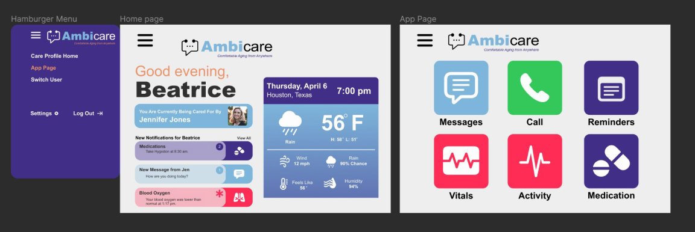
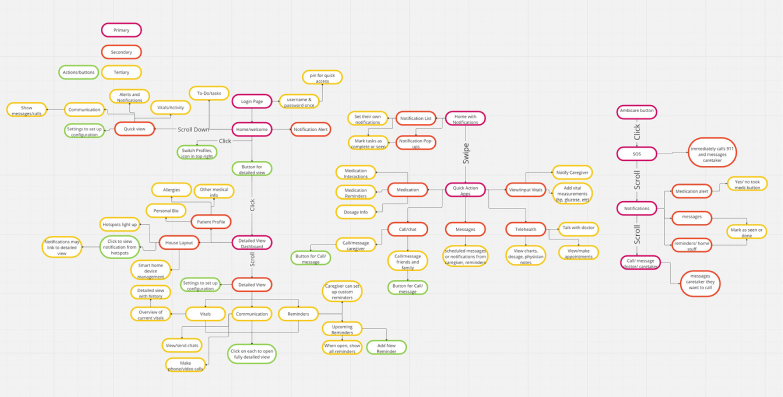
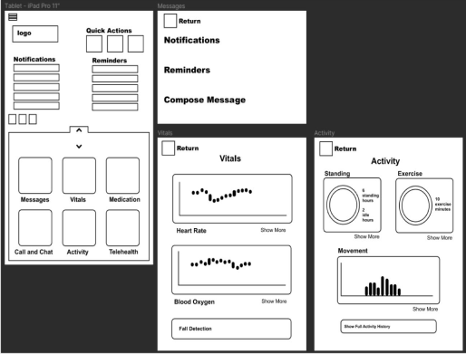
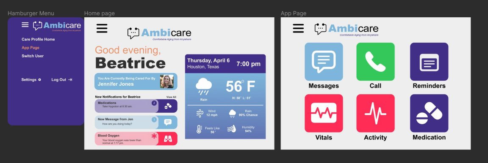
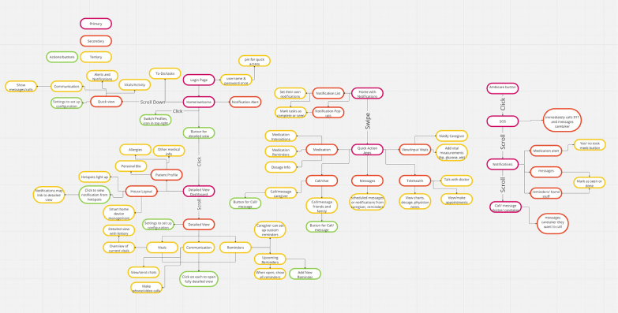
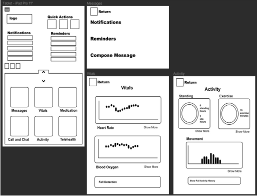

Final UI
This is the final UI and prototyping iteration for the tablet deliverable.
Features large icons,
simple navigation, easily-legible typography, and an easier means of accessing medical information as well
as a means of communication.


Project Description
This Project was created as a part of an Interactive Design studio at Texas A&M University.
Team: Ally Pulnik & Natalya Abrahamian & Gracie Janse
I focused on Market Research and the Tablet Interface Design.

AmbiCare
is an application that facilitates aging in place by monitoring patient activity and vitals in order to
automate actions within their home, establish a link between patient and caregiver, and provide data
visualizations of the aging patient directly to the caregiver. It will alert the caregiver if the patient
is in immediate danger and will monitor daily activities that become more of a challenge with aging.
The
deliverables for this project included a web Interface for the care giver, a tablet interface for the care
receiver, as well as a apple watch application for the care receiver.
The brand identity for AmbiCare drew inspiration from our moodboard. The AmbiCare logo emphasizes a connection between healthcare and communication.
Site Map for the desktop application, tablet, and Apple watch. Low-fidelity/layout for the tablet application.
What We Learned
Designing for the elderly user requires compassion and strong attention to detail. We
had to change our design perspective to accommodate for their needs, in terms of color, size, motion, and
functionality.
We learned the importance of the role of the caregiver, and what specific aspects of
elderly care they struggle with the most.
Takeaways
We’ve received so much feedback from friends
and family expressing how much they want and need a product like this. People have told us that they wish
they could use our product right now, or how they wish they could’ve had this product for a family
member.
As a group we’ve become more compassionate through designs, and this project has shown us that
the end user is ultimately always the highest priority.
Opportunities For Growth
Increased
accessibility features and settings
Accommodations for Alzheimer's care
Support for devices
like blood sugar monitors
User Research
Our user research was conducted through an online survey, which surveyed both family caregivers and healthcare providers who care for elderly patients. Through this survey, our goal was to understand the major pain points for elderly patients receiving care and what would features in an application would help caregivers. The survey also included questions aimed towards collecting data on familiarity with smart devices.
Market Research
Our market research studied driving trends and developments in digital medicine.
Creative Research
Our creative research focused on designing specifically for elderly users, which greatly impacted how I designed the tablet interface. We also researched color psychology and high contrast between texts and backgrounds.

User Journey & UI Design
 


Home
A
About Me



Home
A
About Me